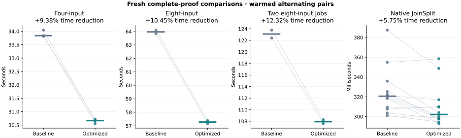
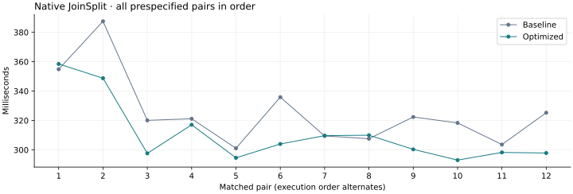

21 October 2026 · Sixth optimization pass · Tesla V100-PCIE-32GB
This run compares the previous internal_inverse release with field_carry.
Both use fresh proofs, the same fixtures and the same independent CPU verifier binaries.
Earlier campaign evidence remains intact.
All seven aggregation pairs improved: median latency fell 9.38% for four inputs, 10.45% for eight inputs and 12.32% for two concurrent eight-input jobs. Native median latency fell 5.75%, with nine wins in twelve pairs and a 4.50% median paired reduction; the short native measurements remain variable. Sampled peak GPU memory rose by 672 MiB for the single eight-input workload and 640 MiB for concurrent jobs, while all unchanged resource budgets passed. The V100-gated candidate is retained for these measured gains on the fixed fixtures.
Values are seconds. Positive reductions indicate lower latency. The pooled-median ratio and median within-pair reduction answer different questions; both are retained along with every raw sample.
| Workload | Baseline median | Optimized median | Pooled reduction | Median paired reduction | Paired wins |
|---|---|---|---|---|---|
| Four-input aggregation | 33.839157 | 30.666227 | +9.38% | +9.70% | 3/3 |
| Eight-input aggregation | 63.963903 | 57.280311 | +10.45% | +10.45% | 2/2 |
| Two concurrent eight-input jobs | 123.096835 | 107.931966 | +12.32% | +12.32% | 2/2 |
| Native JoinSplit | 0.320642 | 0.302193 | +5.75% | +4.50% | 9/12 |

The native sequence is shown separately to make shifts and variability visible.

Goldilocks addition, subtraction and 128-bit reduction now use explicit PTX carry and borrow chains on the measured V100 device family. Each sequence stays inside one assembly block, so no condition code crosses a function or compiler boundary. The full-u64 lazy field representation is preserved.
Reduction uses 2⁶⁴ ≡ 2³² − 1 and 2⁹⁶ ≡ −1 modulo p. Addition and subtraction retain both possible correction folds; dropping the second fold would be incorrect for arbitrary u64 inputs. The reducer's final correction cannot overflow, as shown in the accompanying arithmetic bounds.
The host enables these instructions only for NVIDIA vendor 0x10de, a V100 device name, and compute capability 7.0. Missing capabilities and other devices retain the original portable OpenCL code. The selection is applied to the main engine, legacy DFT context and separately compiled specialized quotient programs.
src/gpu.rssrc/gpu/arithmetic_tests.rssrc/gpu/field.rssrc/block_v2/gpu_hash/engine.rssrc/block_v2/gpu_hash/engine/quotient/specialized.rsProof parameters, round constants, randomness, proof encoding, verifier behavior, NTT scheduling, resource admission and the 250 W power cap remain the same. The Metal implementation is separate.
These are summed kernel-event durations, which can overlap and must not be added to obtain end-to-end latency. The row-hash kernel reports zero private bytes for both builds. No profile events were dropped.
| Workload | Kernel | Baseline seconds | Optimized seconds | Reduction |
|---|---|---|---|---|
| Four-input aggregation | lde_absorb | 6.312790 | 4.851962 | +23.14% |
| Four-input aggregation | lde_ntt | 6.059979 | 5.642201 | +6.89% |
| Four-input aggregation | device_extension_quotient | 3.011084 | 2.232220 | +25.87% |
| Native JoinSplit | lde_absorb | 0.018277 | 0.013467 | +26.32% |
| Native JoinSplit | lde_ntt | 0.012394 | 0.010057 | +18.86% |
| Native JoinSplit | device_extension_quotient | 0.001657 | 0.001138 | +31.32% |
Values are GiB, taking the highest sampled peak across the qualification runs. The original host, device-allocation and whole-device admission budgets remain in force.
| Workload | Baseline GPU | Optimized GPU | Baseline host RSS | Optimized host RSS |
|---|---|---|---|---|
| Eight-input aggregation | 8.512 | 9.168 | 1.225 | 1.223 |
| Two concurrent eight-input jobs | 17.293 | 17.918 | 2.441 | 2.456 |
43 targeted tests passed, plus CPU-only and GPU-without-tuning compilation. The strengthened permanent arithmetic oracle checks 266,369 input pairs for addition, subtraction, multiplication and full 128-bit reduction, on both portable and selected implementations. Edge cases cover both correction folds and noncanonical representatives. A host test checks the device gate. Existing inverse, matrix, quotient-selector, NTT, witness and native proof checks also exercise the integrated code. Isolated screens check 577 complete Poseidon2 permutations and 56 CPU NTT cases, including small direct DFT cross-checks.
The benchmark ledger contains 60 independently CPU-audited outputs representing 192 fresh benchmark proofs. Output hashes are unique, every required GPU stage is covered, and native public-input tampering is rejected. All 691 selected source-file hashes match release and test builds.
| Targeted check | Passed |
|---|---|
| field-device-guard | 1 |
| scalar-absorb-oracle | 1 |
| parameter-guard | 1 |
| tuning-policy | 3 |
| witness-host | 6 |
| witness-budget | 1 |
| ntt-local-memory | 5 |
| ntt-and-tuning-gpu-oracles | 4 |
| arithmetic-oracles | 8 |
| dft-and-commitment-oracles | 6 |
| witness-parity-reference | 2 |
| witness-parity-fusion | 2 |
| witness-rejection | 2 |
| native-wallet-entrypoints | 1 |
Machine-readable evidence and all measurements · Incremental source patch · Source, controllers and raw evidence archive